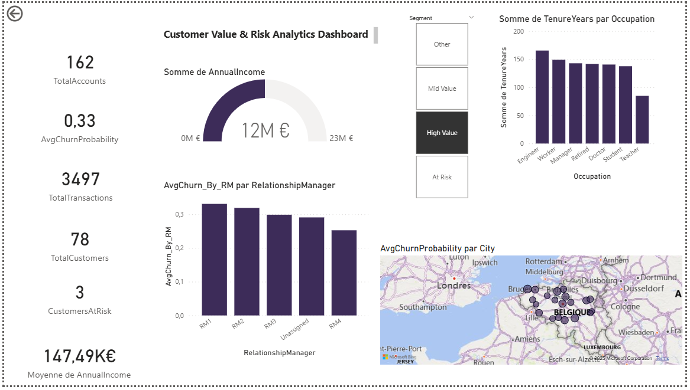

Project Overview
This project predicts whether a bank customer is likely to churn, based on demographic, account and product-usage variables. It combines machine learning, data preparation and business intelligence in one end-to-end workflow, from raw data to a decision-support report.
Data sources. The churn model is trained on the public, anonymised Bank Customer Churn dataset (Kaggle). The relational tables behind the Power BI model (customers, accounts, transactions and products) are synthetic datasets built to simulate a bank's operational systems. The churn score shown in the dashboard is a simulated column of that synthetic customer table: it illustrates how a model score is consumed in a BI layer, and is not an output of the model below.
Objectives
- Analyse bank customer data to find churn drivers and behavioural patterns.
- Train and evaluate several machine-learning models.
- Select the model with the best precision, recall and F1 on the churn class.
- Produce a churn probability and a risk band for each customer of a dataset.
- Deploy a Streamlit scoring app for non-technical business users.
- Build a Power BI dashboard on a relational bank data model (customers, accounts, transactions, products) that uses a churn score per customer.
Machine Learning Pipeline
- Data checks and preprocessing (missing values, scaling, one-hot encoding)
- Removal of identifier columns and of the leakage variable Complain (r = 0.996 with the target)
- Stratified train/test split (80/20: 8,000 / 2,000 customers)
- Model training (Logistic Regression and Random Forest)
- Model selection on the held-out test set: Random Forest performs best
- Export of the Random Forest pipeline (.pkl) and deployment in a Streamlit app
Selected Model: Random Forest Classifier
On the held-out test set (2,000 customers, 408 churners), the Random Forest reaches an accuracy of 0.869, a precision of 0.80 and a recall of 0.47 on the churn class (F1 0.59, ROC-AUC 0.867). Logistic Regression reaches 0.813 accuracy but only 0.21 recall. As 79.6% of customers do not churn, accuracy alone says little: the model is right four times out of five when it flags a customer, and it finds about half of the customers who leave. It is a prioritisation tool for retention teams. The probabilities are not calibrated: they rank customers, they are not a literal chance of leaving.
Download Model (PKL) Read the HTML Report Read the PDF ReportThe model file is a scikit-learn 1.6.1 pipeline (preprocessing + Random Forest, 300 trees).
Jupyter Notebook
The full modelling workflow, with code, charts and results (rendered with Quarto from the notebook):
Live Demo (Streamlit App)
Upload a customer CSV file and get a churn probability and a risk band for each customer:
Launch Streamlit AppPower BI Customer Analytics Dashboard
One-page customer value and churn-risk report built with Power BI on synthetic bank data: headline KPIs, value segments, churn exposure by relationship manager and by city.

Report page shown with the "High Value" customer segment selected in the slicer. Click to enlarge.
Dashboard Features
Customer Segmentation
Rule-based segments (High Value, Mid Value, At Risk, Other) from income, tenure and churn probability.
Churn Risk Analysis
Average churn probability and count of customers above the 0.6 risk threshold.
Portfolio Management
Churn exposure compared across relationship managers, with the income profile of each segment.
Geographic View
Average churn probability by city on a map, and tenure by occupation.
Data Model
Relational model: Customers → Accounts → Transactions, and Customers → Products (one-to-many relationships, single-direction filters).
Demographics, income, churn probability
Balances, credit scores, account types
Deposits, withdrawals, payments
Mortgage, personal loan, credit card, mutual fund, ETF (linked to Customers)
Project Datasets
Synthetic relational tables used in the Power BI data model.
Key Figures
Technical Implementation
ML Pipeline
Scikit-learn pipeline with scaling, one-hot encoding and a Random Forest of 300 trees (precision 0.80, recall 0.47 on churners).
Streamlit App
Web application: upload a customer CSV and get a churn probability and a risk band for each customer.
Data Preparation
Power Query steps: header promotion, explicit data types, column renaming and handling of customers without a relationship manager.
Data Model
Power BI relational model linking customers, accounts, transactions and products, with a churn score on the customer table.
DAX Measures
11 DAX measures (customers at risk, average churn by manager, product penetration, KPIs) and a calculated segment column.
Risk Segmentation
4 risk bands with fixed cut-offs (0.20 / 0.40 / 0.70) so that retention teams can prioritise the Critical and High bands.
Tools
Workflow
Source Code
Notebook, Report and Data (GitHub) App Source Code (GitHub)Contact
Leprince Dongmo Nanda, Dendermonde, Belgium
leprince.dongmo@yahoo.fr ·
LinkedIn ·
GitHub